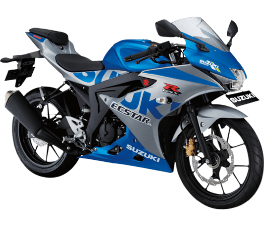

Suzuki

Berani melaju cepat!
Suzuki GSX-R 150 adalah ikon dan penerus tradisi motor sport performa tinggi yang mengusung kecanggihan teknologi. Suzuki menerapkan prinsip filosofi terbaik ketika mengembangkan GSX-R sejak pertama kali, dan masih dipertahankan setiap Suzuki mengembangkan dan menciptakan model generasi berikutnya.
14,1kw Tenaga
131kg Berat
1.075mm Tinggi
147,3cc Mesin
Suzuki GSX-R 150
Suzuki Indonesia Motor menghadirkan warna baru dari Suzuki GSX-R 150. Didukung dengan fitur terbaru Lamp Ring, Lampu Hazard, dan New LCD Speedometer Backlight, membuat perhatian semua orang terpusat padamu.